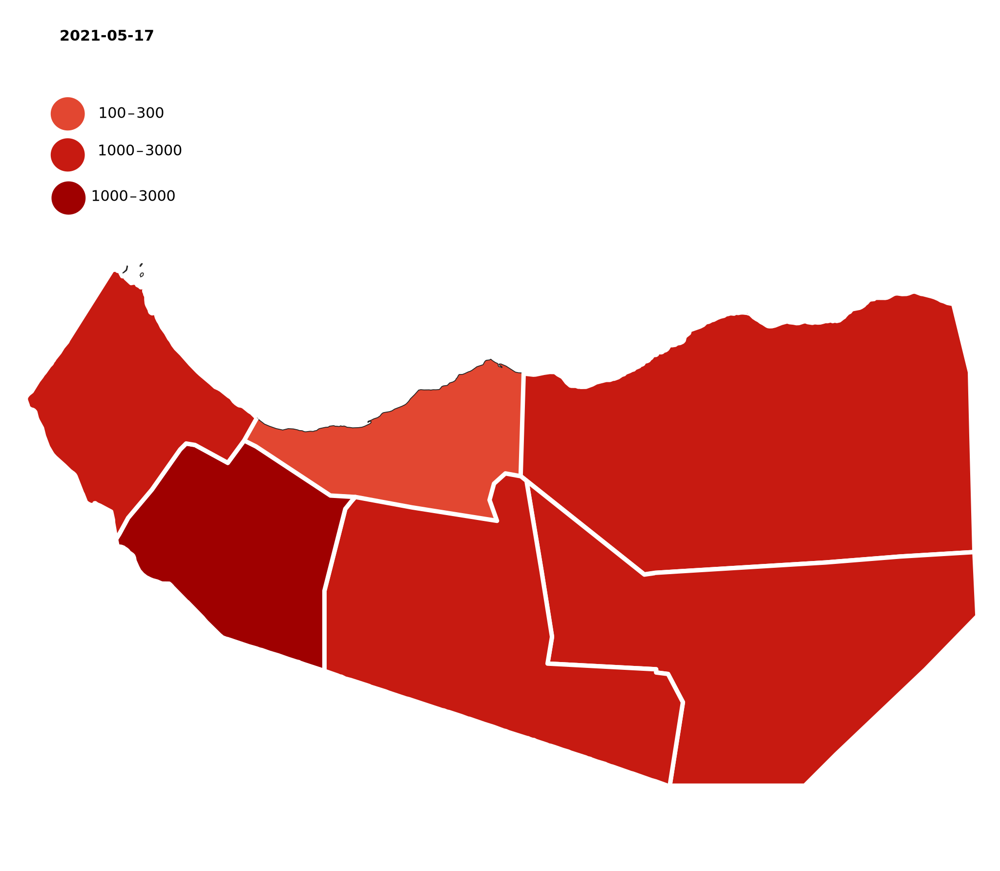

Somaliland History
Somaliland’s history as a distinct region of Somalia dates back to the late 1800s. The territory was a British protectorate until 1960, when it unified with the rest of present-day Somalia, which had been under Italian rule. The merger faced challenges early on, with many in Somaliland rejecting the centralization of power in the country’s south.
Somaliland’s history as a distinct region of Somalia dates back to the late 1800s. The territory was a British protectorate until 1960, when it unified with the rest of present-day Somalia, which had been under Italian rule. The merger faced challenges early on, with many in Somaliland rejecting the centralization of power in the country’s south.
Somaliland’s history as a distinct region of Somalia dates back to the late 1800s. The territory was a British protectorate until 1960, when it unified with the rest of present-day Somalia, which had been under Italian rule.
A rebel group, the Somali National Movement (SNM), emerged in Somaliland in the 1980s opposing the military junta of President Siad Barre, which seized power in 1969. In January 1991, SNM and other insurgent groups ousted Barre, whose forces had killed tens of thousands of Somalilanders [PDF] and destroyed much of the region’s infrastructure. SNM refused to recognize an interim government led by another militia group, and that May it declared Somaliland’s independence, with the city of Hargeisa as capital.
A rebel group, the Somali National Movement (SNM), emerged in Somaliland in the 1980s opposing the military junta of President Siad Barre, which seized power in 1969. In January 1991, SNM and other insurgent groups ousted Barre, whose forces had killed tens of thousands of Somalilanders [PDF] and destroyed much of the region’s infrastructure.
